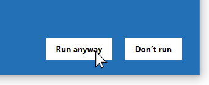

Klusterbox Download and Setup
“Installing” Klusterbox
To get started, you first need to download Klusterbox from klusterbox.com. Please keep in mind that you don’t have to install Klusterbox. There is no setup that runs on your computer and installs Klusterbox on your hard drive. Klusterbox is already ready to go. You will want to move it out of your Downloads folder. I put Klusterbox in a folder in my Documents folder, near where I keep my nalc documentation. I don’t put it in my Program Files. I would advise against putting it directly on your desktop because, as the program runs, it will create new files and folders that will appear next to the klusterbox file. This could clutter you your desktop quick.
You might want to create a shortcut to the program and place it on your desktop. This is pretty simple on Windows. You just right click on the file and select “Create Shortcut.”
I will consider an installation program for future version of Klusterbox, but at present I don’t know how to do it and there are some advantages to not having an installation program – such as having the ability to have multiple copies of Klusterbox installed on one hard drive. Actually, you can have as many working copies as you like.
Step by Step Download and Setup
1. Go to klusterbox.com. Select the Download link.
2. Determine what your operating system type is. It will be either 32 or 64 bit. You can type system type or system information into the windows search bar and look at the System Information screen.
3. Download the distribution appropriate your your operating system by pressing one of the big green buttons. If you can’t figure out which operating system type you have, then use the 32 bit version – it will work for both operating system types.
4.A dialog will appear. Click “Save” to begin the download.
5. (This might happen) I got this warning message from my McAfee anti-virus. This seems unfair. It “might” contain a virus? Go ahead and press “Accept the risk.” You can scan if for viruses later, before you open it, if want to take precautions.
6. Go you the download folder on your web browser. On the Firefox web browser it is located on the top right of the window. Below is a picture of what it looks like.

7. Clicking on the Download Folder Icon should give you a list of recently downloaded files with the most recent on the top. Don’t open the file yet though. Remember, this is not a setup.exe, it is already ready to run and, for a lot of good reason, it is best not to open it in the downloads folder. So you will want to move it to a more suitable home. Where you put it is up to you. I recommend somewhere in your Documents folder. I don’t recommend your Desktop, Program Files or Downloads Folder.
Note: If you copy and paste the file, you can put copies in other places which will run independently of the other copies.
8. Create a home for you Klusterbox program. Right click on your Windows Explorer Icon, select Documents. Then just drag the zip file from the Downloads folder to Documents. You can create a new folder or use an existing folder. Really you can put the zip file any where you want. You can copy and paste the file instead if you prefer.
8 a. Once the zip file is in it’s new location, then click on it to open it up. You will see one file and one folder called kb_sub (whatever you do, do not delete the kb_sub folder and always keep it next to the klusterbox file). Click on the Klusterbox Application to open it.
8 b. Next press the Extract All button.

8 c. A new window will appear to prompt you to provide a location for where the new file will be extracted. If you moved the file out of the out of the Downloads folder and into the Documents folder, then you shouldn’t have to worry about changing the location. If you unzipped the zip file in the Downloads folder, you now have a chance to change the location with the “Browse” button. Finish the extraction by pressing “Extract.”
8 d. A window will open showing you the extracted files. To open Klusterbox, click on the application “Klusterbox.” This is how you will open Klusterbox from now on. Klusterbox does not appear on the start menu (maybe in future versions, but not now). The kb_sub folder contains files that Klusterbox needs to work properly. Make sure to not delete it and to keep it in the same folder as the Klusterbox app to ensure the program works correctly.
8 e. Create a shortcut: If you want to make accessing Klusterbox a little easier by creating a shortcut, then right click on the Klusterbox file. Select “Create Shortcut” on the menu. This will create a shortcut that you can drag to your Desktop for easy access.
9. (Optional) If you want to be sure that the program doesn’t contain a virus, visit www.virustotal.com and upload the Klusterbox file. The site scans whatever is uploaded to it with all the commercially available antivirus software programs. Klusterbox version 2 comes up clean in 70 different anti-virus programs – except for one false positive (just my luck) from an anti-virus I’ve never heard of Jiangmin which doesn’t respond when you report false positives.
If you have an anti-virus installed on your computer (I have Avast), you can right click on the klusterbox file and select “Scan selected items for viruses.” Even if you don’t take this step, the anti-virus should scan any executable file the first time you start it anyway.
10. Since this is the first time starting this program and because Windows doesn’t know that Klusterbox exist, you will get a warning from Windows.
If you get this prompt, click on the “More info” link. Only after that will you get the option to “Run Anyway.” Please press, “Run Anyway.”

11. Klusterbox should now open unless you have issues with Anti-Viruses. It that happens, see the section below called Anti-Virus Programs.
Anti-Virus Program Problems
There might be an issue with anti-virus programs. This was an issue with Klusterbox version 1.0, but not too much of a problem. I have Avast Anti-Virus. So the following will detail the conflicts that Avast has with Klusterbox and will show how to get things working properly. I don’t know how other anti-virus programs are going to interact with Klusterbox, but hopefully, this description will give you an idea of how to handle them.
First, the anti-virus program scans Klusterbox as the program is trying to open.
Once the scan is completed, a message will appear stating that no viruses were found. This appeared and disappeared before I could get a screen shot of it.
The next thing to happen is a prompt appears with an error message and Klusterbox shuts down. This looks pretty grim.
>
Immediately after that another prompt from Avast stating that Avast has stopped Klusterbox from writing to a document called Mandates.SQLITE. Mandates.SQLITE is a database which is created by Klusterbox when Klusterbox starts for the first time. About 50% of what Klusterbox does is reads and writes to the Mandates database. So by shutting down that channel of communication, Avast is crashing the program. To make sure the program can function without Avast shutting it down, press “Allow App.”
Once you press “Allow App” you will get a new prompt informing you that Klusterbox will now be allowed to access the database. That’s a good thing because it allows Klusterbox to operate.
Go ahead and press “Got It” and then close the “Fatal Error Detected” prompt by clicking “OK.”
Now you should be able to open Klusterbox by double clicking on the program.
If you are still getting problems, try shutting down the anti-virus program temporary. With Avast you can do this with by disabling the shield control by right clicking on the Avast Icon in the system tray. The selecting “Avast shields control” then “Disable for 10 minutes.”
Once the anti-virus program is disabled, then open Klusterbox. It should open. Once it is open you can turn the anti-virus program back on by following the same path you used to shut it off and selecting “Enable all shields.”
The problem is annoying but easy to fix and once you’ve got Klusterbox running, then you don’t have to worry about it anymore. Clearly this is some sort of bug with Avast Anit-Virus. It doesn’t make sense that the program is scanned, cleared and then prohibited from executing.
If you had to work though all these steps just to get Klusterbox to work on your computer, then thank you for your patience. It’s complex for an amateur like me because it’s not my program that’s crashing itself, it’s another program. I’m working to improve the program and I hope to iron out problems like these for the future.